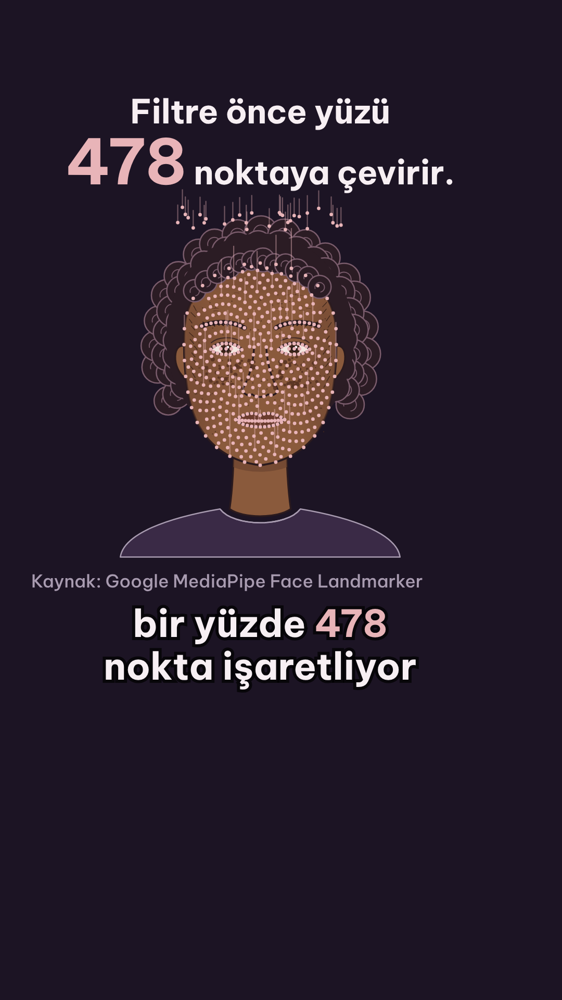
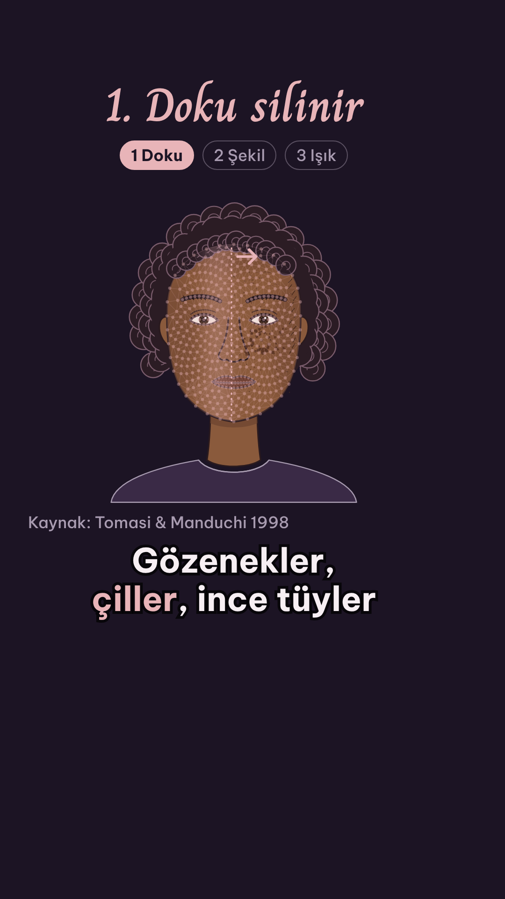
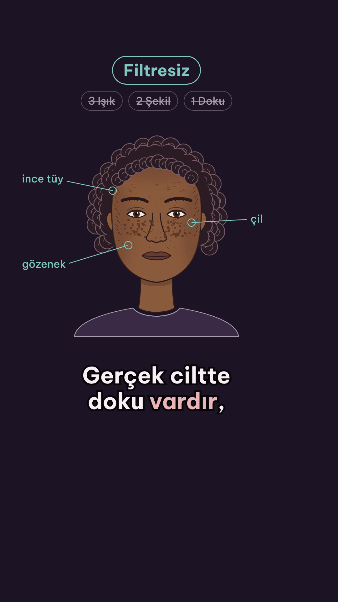
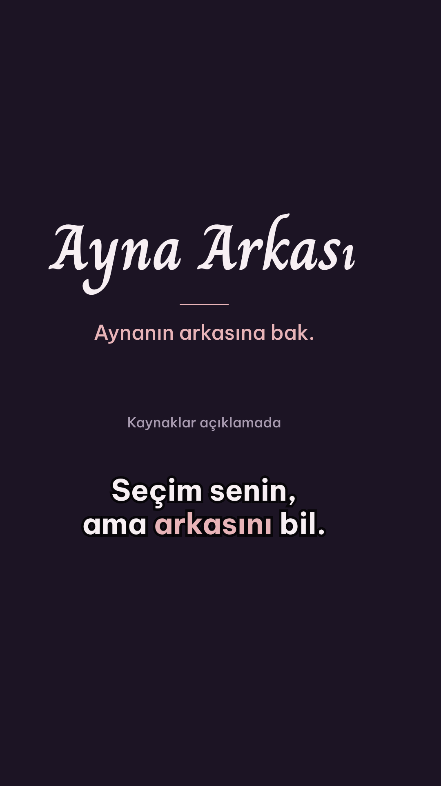

Ayna Arkası · Short 001 · “Filtre bir yüzü nasıl hesaplar?” · 1080×1920 · ~34 sn · 4 anahtar kare

0:02 kanca
Çizgi-portrenin üstüne toz pembe noktalar yağar, sayaç 0’dan 478’e koşar. İlk karede metin + kaynak etiketi.
SES“Google’ın açık kaynak yüz modeli, bir yüzde 478 nokta işaretliyor. Filtreler işe buradan başlar.”

0:11 1. adım
Noktalar üçgen ağa bağlanmış. Yumuşatma çizgisi soldan sağa geçer: solda çil, gözenek ve tüy kalmamış, sağda hâlâ duruyor. Ten rengi aynı.
SES“Önce doku silinir: gözenekler, çiller, ince tüyler. Hepsi yumuşayıp kaybolur.”

0:29 ödül
Geri sarma biter: üç adım tek tek kalkar, noktalar ve ağ silinir. Yüz “Filtresiz” (mint) döner; doku nötr etiketlerle adlandırılır.
SES“Filtredeki yüz, hesaplanmış bir yüz. Gerçek ciltte doku vardır, olmalı da.”

0:33 bitiş kartı
Erik zemin, “Ayna Arkası” marka yazısı (Charm), slogan ve “Kaynaklar açıklamada”. Logo yok (henüz kesinleşmedi).
SES“Seçim senin, ama arkasını bil.”